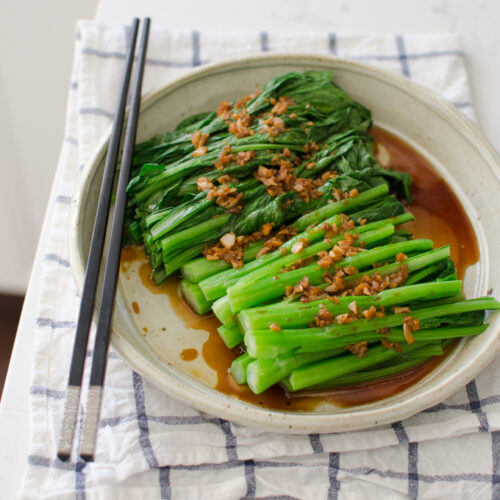

Choy Sum

Garlic Choy Sum
Paragraph 1
Paragraph 2
Ingredients
- 1 bunch choy sum
- 2 tablespoons peanut or grape seed oil
- 2-3 cloves garlic, minced
- 1-1/2 tablespoons soy sauce
- 2 teaspoon water
- 1 teaspoon sesame oil
Intructions
- Bring a pot of water to boil and add some salt.
- Add the stem part of choy sum first into the boiling water, wait for 30 seconds, then add the rest of leafy parts into the water. Blanch the greens for about 2 minutes or until crisp soft.
- Drain choy sum to the strainer. Arrange it on the cutting board and cut them in half lengthwise. Transfer the greens in a serving dish.
- Heat oil in a small skillet over medium heat. Saute garlic until fragrant. Add soy sauce, water and sesame oil; stir well.
- Remove the skillet from the heat and pour the sauce over choy sum. Serve warm.